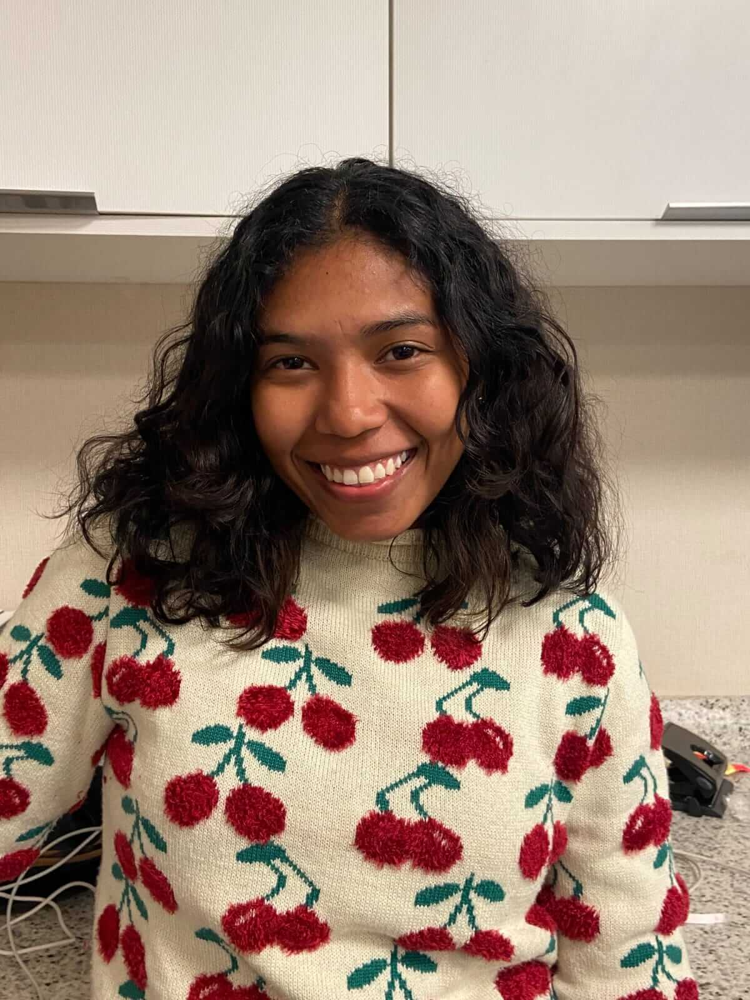

Bruna Araújo Sousa | WDD 130
Hello! My name is Bruna Araújo, I am from Brazil. I love puppies! I am 22 years old,and I love studying and learn new things. I recently returned from my mission in São Paulo, Brazil. I currently work in a billingual school, thanks to the English I learnt on the mission and during my studies at BYU Pathway Worldwide. I am a Software Development student at BYU Idaho-online. I'm the youngest of my siblings and the only girl. I like to read novels and fiction, and one of my favorite books is Percy Jackson saga. I love movies and my favorite is Interstellar, and anyone who has seen it should know one of the most striking phrases in the film: “Love is the one thing we're capable of perceiving that transcends dimensions of time and space”, is one of the phrases spoken in this film by Dr. Brand (Anne Hathaway).